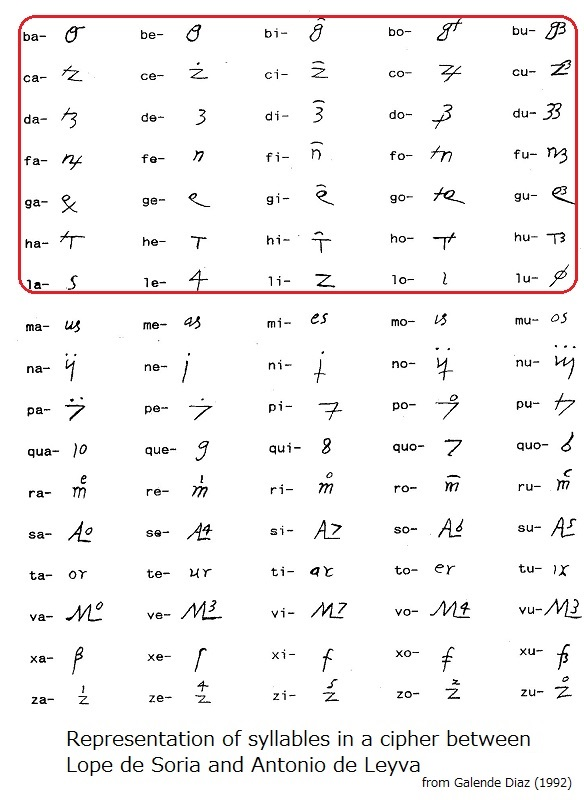
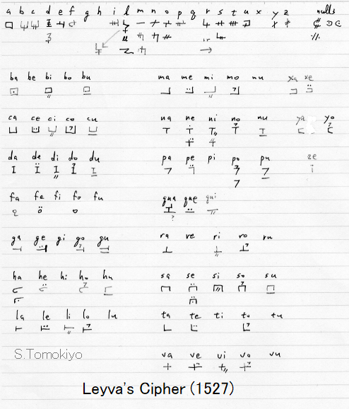

Of the variety of ciphers used during the reign of Philip II (see another article), use of vowel indicators is a hallmark of Spanish ciphers at the time. The present article presents its link to Milanese ciphers.
Vowel indicators as used herein are diacritic signs indicating vowels, which are combined with base symbols to systematically form syllables. They are used in many Spanish ciphers at the time (see another article) (though Kahn (1967) p.119 describes it as a "peculiarity" of a 1577 cipher). So, when I saw an undeciphered despatch in the French archives, I knew it was Spanish and, by luck, identified the right cipher (see another article).


However, vowel indicators was not an invention of the reign of Philip II: a similar cipher (called the Imperial Cipher of 1544-1554 for convenience) (see another article) was used as early as 1544. Prince Philip and Suarez de Figueroa used a similar cipher in 1543. Undated ciphers Cp.44 and Cp.45 with vowel indicators may also belong to the 1530s-1540s.

Earlier on, a Milanese cipher for use with Camillo Gilmo residing in the Imperial court (1530) (Meister (1902) p.32) employed a vowel indicator system.


From the above, it is tempting to say that the vowel indicator system was brought into Spanish secret writing from Milanese ciphers. But, of course, we need some evidence for a link between them.
A cipher between Lope de Soria and Antonio de Leyva (probably around 1528-1535, see anorhter article, called Leyva's Cipher (1528-1535) for convenience) looks like an incipient form of the vowel indicator system. (Of course, a consistent assignment of symbols to syllables in later ciphers is, though convenient for users, a weakness in terms of security.)
Antonio de Leyva was commander of the Imperial army in the Duchy of Milan. Considering that Lope de Soria used a cipher without vowel indicators in correspondence with the Emperor in 1523 (see anorhter article), it seems probable that the scheme was introduced by Antonio de Leyva, who might have either invented or learned it in Milan. However, considering that a letter of 1533 from Suarez de Figueroa to Leyva employed a different cipher, Leyva's Cipher (1528-1535) may have been introduced sometime between 1533 and 1535.
To establish the origin of the vowel indicator scheme, more specimens need to be found. In particular, a more accurate dating of Leyva's Cipher (1528-1535) is needed.
At least, use of diacritic signs to increase the number of symbols was known in Milan as early as around 1450, as shown by the following examples:
(i) a cipher between the Duchess of Milan (Bianca Maria Visconti? (Wikipedia; the last Visconti duke had died in 1447 but her husband was to become duke only in 1450)) and King Ferdinand (of Naples?), dated 14 March 1448 (Meister (1902) p.30)
(ii) a cipher ca. 1450, included in a codex, Franciscus Tranchedinus, Furtivae litterarum notae containing some 200 ciphers used by the Milanese Chancery (1450-1496) (Yale University)
(Section added in December 2018)
The cipher used by Genoese Admiral Andrea Doria in writing to Emperor Charles V from October 1528 (see another article) used a vowel indicator system.

This cipher (called herein the Doria-Charles V Cipher (1528)) employs mainly superscript numerals to indicate vowels. Although Leyva's Cipher (1528-1535) above also uses superscript numerals for some syllables, general impression is different and it does not seem one was modelled after the other.
After all, the vowel indicator system may have been devised in Milan and Genoa independently.
(Section added in January 2019)
Antonio de Leyva's letter of September 1527 employs a vowel indicator system. This is the earliest cipher with vowel indicators known to me.


(Section Added in June 2023)
An even earlier specimen was identified in letters deciphered by Marcello Simonetta and Norbert Biermann. It is the Castiglione-Schomberg Cipher used in March-April 1527 (see another article).
Castiglione was an apostolic nunctio (ambassador) sent by the Pope to Emperor Charles V in Spain. Schomberg worked for the Pope in negotiation with the Imperialists. If this cipher was provided by the Vatican, it is wondered how come the Holy See and the Imperialists introduced the same system about the same time. See the above-mentioned article for some discussion.

The vowel indicator scheme was also used in some other Italian ciphers other than Milanese:
(i) a cipher between Gio. Battista Ricasoli, Bishop of Cortona (1538-1560) and "mons. Giovanmatteo" (Meister (1906) p.210).
(ii) a cipher between Alfonso Rossetti, Bishop of Comacchio (1559-1563, thereafter Bishop of Ferrara) and the Duke of Ferrara (Meister (1906) p.312);
(iii) a cipher between Cardinal of Burgos and "il colonello N.M. di campo" (Meister (1906) p.217 identifies the cardinal with Francisco Pacheco, made cardinal in 1561 and made Bishop of Burgos in 1567 (Wikipedia) but, judging from the date 1557 of another cipher he used with Philip II, the "Cardinal of Burgos" may refer to Francisco de Mendoza and Bobadilla, made cardinal in 1544 and made Bishop of Burgos in 1550 (Wikipedia)).
Of these, the "Cardinal of Burgos" shared other ciphers with Philip II of Spain (Meister p.216, 217) and he may well have learned the scheme from the Spanish court. For the other two, although it is possible that these were devised independently, further search is desired to find links between these ciphers and Spanish or Milanese ciphers.
(Section added in August 2024) Quite a few ciphers in the Milanese archives employ combined symbols with vowel indicators or similar exponents. (I now see Meister (1902) already pointed out that many Milanese ciphers used symbols with lines/dots or numerical exponents added systematically and that use of numerical exponents was very popular (at least) until the 1530s (p.28).)
The DECODE Database has many items from the "Sforzesco" series in the State Archives of Milan (SAMi):
Sforzesco 642, 645, 650 (mostly ciphertext): R1077-R1094, R1098, R1144-R1153, R1155, R1157-R1161
Sforzesco 1591: R5235-R5300
This includes ciphers from the 1520s and 1530s.
Sforzesco 1597: R5301-R5474 (R1857 includes (digital) duplicates of about fifteen of them; R1859 includes some fifty)
This includes ciphers from the fifteenth century. R5354 (including a title page) begins a section for "Cifre di diuerse Sorti di diuersi tempi", which ends with a Japanese syllabary (see another article). Most of the rest are ciphertexts.
Sforzesco 1598: R5475-R5611 (the images in DECODE may not be complete; R5475 is identical with R1856 but lacks a verso image with an endorsement that is recorded in the latter)
This includes ciphertexts as well as keys such as R5589 (1531), R5475 (1686 according to the verso of R1856), R5610 (1716).
The three ciphers presented by Meister (1902), p.30-32, are the same as DECODE R5392 (from Sf.1597), R5370 (from Sf.1597), and R5235 (from Sf.1591). Meister gives the archival source as "Potenze Estere" (Foreign Powers), whereas the metadata of DECODE R1857 (i.e., Sf.1597) mentions "Foreign Powers" (Potenze Soverane). (See catalogue information.)
It comes as a fresh surprise that Milanese ciphers from the mid fifteenth century already included symbols for syllables. Moreover, despite Meister's observation ("systematically"), the syllable symbols were not systematically formed (which is, of course, better from a cryptographical point of view) in the early period. (It is also interesting that early Milanese ciphers often employ VC syllables rather than CV.)
R5317 from 1447 (MccccxLvii, marked "Aragona"), takes "b" as a base symbol to form syllables. Adding "z" forms a symbol for "ad", adding "÷" forms a symbol for "ed", adding "u" forms a symbols for "id", adding "=" to the left forms "od", and adding a superscrit "u" forms "vd."
R5323 for "Filippo Maria Duca di Milano" (d.1447) also has nonsystematically assigned VC syllables. (Although there is partial regularity in that many, but not all, syllables with the same vowel share a base symbol, there is no regularity in assigning additional strokes for consonants.)
R5318 from 1451 ("Nicodemus") has CV symbols, again irregularly assigned.
In some cases (e.g., R5322, R5370, R5372, R5374), superscript figures or letters are used for two or more sections: single letters, double letters, and nomenclature entries. A good point is that superscript is used for some symbols for single letters but not for others. This can prevent inferring by codebreakers that symbols with superscript letters are all, for example, proper names as in R5344, R5362, R5367, R5387. Avoiding using the same type of symbols for a particular kind of entries is a good practice that is overlooked too often.
Sf.1591 shows syllables continued in use around 1530 but tended to be more systematical.
For example, R5235 ("Ex Cremona 1530 die 27 maii cum d. Camillo Gilmo secretario residenti in curte Caesarei Maiestais" according to Meister (1902), p.32) systematically forms CV syllables by adding a vertical stroke for "A", two strokes for "E", three strokes for "I", a circle for "U", and a "plus and circle" for "U." R5266 is similar to this. These are similar to the vowel indicator system in Spanish ciphers (including those of Emperor Charles V).
R5242 forms CV, VC, CVC, CCV syllables. Syllables are formed fairly systematically: da (a9), de (a10), di (a11), do (a12), du (a13), fa (a14), fe (a15), fi (a16), fo (a17), fu (a18), fla (a19), fle (a20), fli (n9), flo (n10), flu (n11), ga (n12), ..., la (m10), le (m11), li (m13), .... R5249 (from 1528), R5252, R5257, R5258, R5261, R5262, R5271, R5272 are similar to this.
R5250(=R5275) employs trivial vowel indicators. That is, "ba", "be", "bi", "bo", "bu" are represented by a base symbol with subscript "a", "e", "i", "o", "u", etc.
R5243 does not use additional strokes (diacritics or exponents/superscripts) to form syllables. Instead, syllables form pairs (ba/bre, be/bri, bi/bro, ...) and it seems a syllable is substituted with the other syllable in the pair.
We should not jumpt to conclusions, but vowel indicators (signs attached to consonant symbols to systematically form syllables) seem to be a degenerated form of combined symbols in Milanese ciphers.
Héder, M ; Megyesi, B. The DECODE Database of Historical Ciphers and Keys: Version 2. In: Dahlke, C; Megyesi, B (eds.) Proceedings of the 5th International Conference on Historical Cryptology HistoCrypt 2022. Linkoping, Sweden : LiU E-Press (2022) pp. 111-114. , 4 p. [pdf]
Megyesi Beáta, Esslinger Bernhard, Fornés Alicia, Kopal Nils, Láng Benedek, Lasry George, Leeuw Karl de, Pettersson Eva, Wacker Arno, Waldispühl Michelle. Decryption of historical manuscripts: the DECRYPT project. CRYPTOLOGIA 44 : 6 pp. 545-559. , 15 p. (2020) [link]
Megyesi, B., Blomqvist, N., and Pettersson, E. (2019) The DECODE Database: Collection of Historical Ciphers and Keys. In Proceedings of the 2nd International Conference on Historical Cryptology. HistoCrypt 2019, June 23-25, 2019, Mons, Belgium. NEALT Proceedings Series 37, Linköping Electronic Press. [pdf]
Aloys Meister (1902), Die Anfange der Modernen Diplomatischen Geheimschrift
Aloys Meister (1906), Die Geheimschrift im Dienste der Papstlichen Kurie
Related Articles:
S. Tomokiyo, Ciphers during the Reign of Emperor Charles V
S. Tomokiyo, Spanish Ciphers during the Reign of Philip II